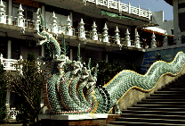
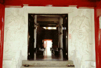
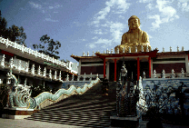
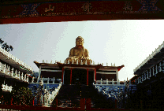
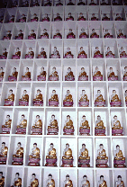

万仏寺/台中 霧峰
  
台湾全島の省都、台中の霧峰。台湾の首都は台北でしょう、という方もあろうが、じつは日本の国会議事堂にあたる台湾省議会議事堂は台中の霧峰にあるのだ。台北は中国大陸を含めた中華民国全土の暫定首都なのである。詳しいことは他の真面目な本でも読んでくれ。
ま、そのへんの大人の事情はどーでもいいんだけど、要はここが台湾名物の国会議員の殴り合いが日夜繰り広げられている舞台だ、ということ。で、そのバトルスタジアムの真後ろになんと大仏が鎮座しているのである。よーく考えて頂きたい。例えば日本の国会議事堂の真後ろに金ピカの大仏さんがいたら・・・・・何と素晴らしい光景だろう。
で、大仏さんである。3階建の正殿の上に21メートルの金ピカの釈迦像が座っている。そしてその前の階段の両脇には9頭龍の手摺、さらにその外側には天女やら釈迦弟子らのタイルモザイクがあつらえてある。
そして私の鋭い目はその中に懐かしのジャンボマックス（ドリフだよ）がいるのを見逃さなかった・・・・
肝心の大仏さんは内部空間もなくがっかりだったんだけど正殿内の壁にみっちり埋込まれた観音像や修行殿のでかい寝釈迦などがあって結構楽しめた。
 
次のスポットへGO!
台湾大仏列伝のページへ
珍寺大道場 HOME